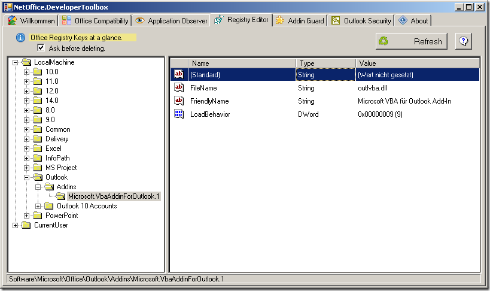

Registry Editor
What can the Registry Editor do for you?
The Registry-editor is technical and optical 1:1 clone of the Windows Registry-editor, but it is limited to the registry keys of Office applications. If you want to check or change an Office-specific key, you can do this faster and easier with the NetOffice Registry Editor.

Functionality and Settings
All dialogs and functions are based exactly on those of the Windows
Registry-editor. The only exception is: If you do not have adminitrator rights,
the NetOffice Registry-editor does not offer you the possibility to change keys
or values under the RootKey HKEY_LOCAL_MACHINE.